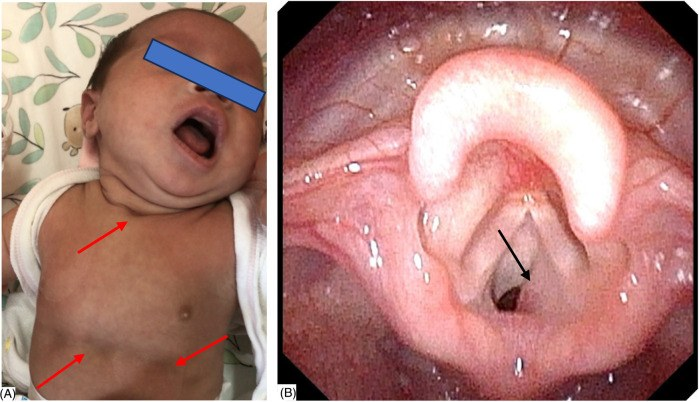
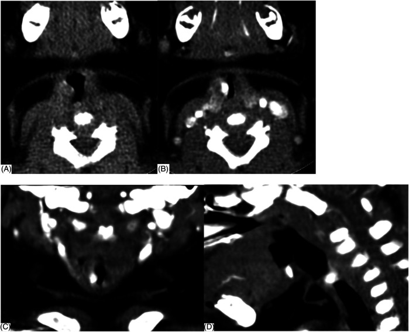
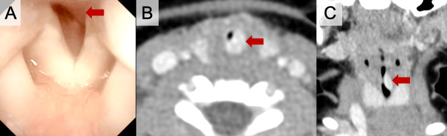

3005 — U máu dưới thanh môn ở nhũ nhi: rít HAI thì + u máu vùng râu, propranolol & khi nào can thiệp
Tags: pattern:rit-thi-hit-vao pattern:rit-hai-thi pattern:khoi-duoi-thanh-mon pattern:u-mau vung:duong-tho vung:thanh-quan vung:co anatomy:thanh-quan protocol:noi-soi-ong-mem protocol:CT-co-can-quang protocol:propranolol
Mức chắc chắn (certainty): tổng hợp y văn (literature synthesis) — ghép loạt 25 ca trong 10 năm (Front Pediatr 2025, PMC12162989), đoàn hệ 798 trẻ u máu (Acta Paediatr 2026, PMC13250966), ca điều trị sớm tránh mở khí quản (Cureus 2025, PMC12580773), 3 ca đặt T-tube + propranolol (J Bras Pneumol 2022, PMC8964104) và 10 ca kháng propranolol được nút mạch xơ (Front Oncol 2023, PMC10018163). Không có ca do nhóm tự chụp.
Câu hỏi thực hành: bé gái 2 tháng tuổi, rít thì hít vào rồi thành rít HAI thì trong 2 tuần, nặng lên khi khóc và bú; đã 2 lần điều trị "viêm phế quản" không đỡ; không sốt, không u máu da rõ. Câu hỏi: đây có phải mềm sụn thanh quản không, có cần nội soi/CT không, và khi nào bắt đầu propranolol thay vì chờ tự thoái triển? Bài chốt ba quyết định: (1) rít hai thì + không đáp ứng điều trị "croup/viêm phế quản" ở trẻ < 6 tháng = soi đường thở; (2) khối dưới niêm mạc ngấm mạnh 118–300 HU dưới dây thanh = u máu dưới thanh môn; (3) propranolol là điều trị đầu tay — không chờ tự thoái triển khi còn tắc nghẽn, và không sinh thiết khối mạch máu. Nối 694 – Mềm sụn thanh quản ở nhũ nhi, 612 – Cấp cứu đường thở trên trẻ em, 602 – Khí phế quản mềm.
1. Tổng quan bệnh học – cơ chế hình ảnh: vì sao 1–2 mm u đã gây suy hô hấp
- Bản chất: u máu dưới thanh môn (subglottic hemangioma, SGH) là u máu nhũ nhi (infantile hemangioma, IH) — u mạch lành tính GLUT1 dương, xuất hiện sau sinh, tăng sinh mạnh trong 3–9 tháng đầu rồi thoái triển chậm trong nhiều năm. IH gặp ở 2–5% trẻ sinh sống; u máu đường thở chỉ chiếm 1,6% trong 798 trẻ được theo dõi u máu (Acta Paediatr 2026, PMC13250966); SGH chiếm 1,5% các dị tật thanh quản bẩm sinh (J Bras Pneumol 2022, PMC8964104).
- TẠI SAO vị trí dưới thanh môn lại nguy hiểm: dưới thanh môn là vòng sụn nhẫn kín, không giãn được — khác với mũi/hầu mềm. Theo định luật Poiseuille, sức cản đường thở tỉ lệ nghịch với lũy thừa bậc 4 của bán kính (R ∝ 1/r⁴). Ở nhũ nhi, đường kính dưới thanh môn chỉ ~4–5 mm; u dày thêm 1 mm làm giảm một nửa bán kính → sức cản tăng ~16 lần. Vì vậy khối 1,89–12 mm (trung bình 6,77 ± 2,53 mm) đã đủ gây suy hô hấp.
- TẠI SAO rít HAI thì: tổn thương cố định ở vòng sụn nhẫn cản trở cả thì hít vào và thở ra; khác mềm sụn thanh quản (sa động) chỉ rít thì hít vào. Trong loạt 25 ca, rít 25/25, suy hô hấp 13/25, co lõm ba hõm 10/25, ho "sủa" 9/25, bú khó 8/25, tím 2/25, khàn giọng 2/25.
- Dịch tễ – chân dung: nữ:nam = 17:8; tuổi khởi phát 1 ngày – 8 tháng, trung vị 33 ngày; 96% (24/25) < 6 tháng, 16% (4/25) có triệu chứng ngay khi sinh; tuổi chẩn đoán trung vị 3 tháng. Y văn: 80–90% xuất hiện trong 6 tháng đầu, tuổi chẩn đoán trung bình 3,6 tháng.
- TẠI SAO dễ chẩn đoán nhầm: 92% (23/25) từng bị chẩn đoán khác — 22 ca "nhiễm hô hấp" (viêm phế quản/viêm phổi/viêm thanh quản cấp), 5 ca mềm sụn thanh quản, 1 nang thanh quản, 1 hen. Lý do: rít + ho + ran ngáy giống croup, nhưng không sốt, không đáp ứng kháng sinh/khí dung, và nặng dần theo tuần.
- Dấu hiệu da định hướng: 24% (6/25) có u máu ở nơi khác (cổ, lưng/mông, tay–vai, môi/lưỡi/mí). U máu đoạn vùng râu (segmental beard distribution) có nguy cơ u máu đường thở 33,3%; u máu đoạn vùng mặt/cổ không vùng râu nguy cơ 11,5%; 38,5% trẻ có u máu đường thở chỉ có u máu khu trú quanh môi/mũi (PMC13250966).
- Hình ảnh học — vì sao CECT là chốt: trên CLVT không cản quang, khối 49,36 ± 13,66 HU (23–78 HU) — không đủ để phân biệt với mô mềm; sau cản quang, khối ngấm mạnh 227,40 ± 46,45 HU (118–300 HU), ngấm nhanh thì động mạch, bờ rõ, nằm dưới niêm mạc. Trên nội soi ống mềm: khối nhẵn, tròn, dưới niêm mạc, màu hồng (84%), tím/xanh (8%), đỏ tươi (8%); dễ chảy máu khi đụng — không sinh thiết.
- TẠI SAO không chờ "tự thoái triển": u tăng sinh nhanh nhất 3–9 tháng, đúng lúc đường thở nhỏ nhất; không điều trị, tử vong có thể tới ~50% do tắc nghẽn (J Bras Pneumol 2022). Propranolol làm khối co lại trong vài ngày tới vài tuần, nên điều trị sớm là cấp cứu mềm, không phải "theo dõi thẩm mỹ".
2. Mẫu hình + chẩn đoán phân biệt theo tuổi và pha tiếng rít (Gamut)
- Quy tắc định khu bằng pha:
- Thì hít vào: tắc nghẽn ngoài lồng ngực — mềm sụn thanh quản, liệt dây thanh, nang thung lũng, hẹp thanh môn.
- Thì thở ra: tắc nghẽn trong lồng ngực — khí phế quản mềm, chèn ép mạch máu, u khí quản.
- Hai thì: tổn thương cố định thanh môn/dưới thanh môn — SGH, hẹp dưới thanh môn, vòng mạch, hẹp khí quản.
- Gamut theo tuổi:
- Sơ sinh – 2 tuần: mềm sụn thanh quản, liệt dây thanh, hẹp thanh quản bẩm sinh, nang thung lũng.
- 1–6 tháng: SGH (đỉnh), hẹp dưới thanh môn mắc phải sau đặt nội khí quản, nang dưới thanh môn.
- 6 tháng – 3 tuổi: croup virus, viêm thanh quản co thắt, dị vật, u nhú thanh quản.
- > 3 tuổi: u nhú, hẹp khí quản, vòng mạch, u trung thất.
- Gamut theo bối cảnh: u máu da vùng râu + rít hai thì → SGH; tiền sử đặt nội khí quản → hẹp/nang dưới thanh môn; sốt + ho sủa + khởi phát nhanh → croup; bú khó + rít hai thì + không thay đổi theo tư thế → vòng mạch (phải CTA).
- Mnemonic "BEARD": Biphasic stridor, Enhancing subglottic mass, Age < 6 months, Refractory "croup", Dermal hemangioma (beard) — đủ 3/5 là chỉ định soi + CECT.
3. Bảng so sánh phân biệt (ma trận đối chiếu)
| Thực thể (entity) | Hình ảnh điển hình | Chốt vào (rule-in) | Chốt loại (rule-out) | Gợi ý xác nhận |
|---|---|---|---|---|
| U máu dưới thanh môn (SGH) | Khối nhẵn dưới niêm mạc dưới dây thanh, ngấm mạnh 118–300 HU, bờ rõ, không xâm lấn sụn; nội soi khối hồng/tím, mềm, dễ chảy máu | Rít hai thì tiến triển ở trẻ < 6 tháng + khối ngấm mạnh dưới thanh môn + u máu da (24%) | Không ngấm, bờ xâm lấn, sụn bị phá → nghĩ u khác | Nội soi ống mềm + CECT; không sinh thiết; propranolol thử |
| Mềm sụn thanh quản | Nắp thanh môn hình omega, mô phễu sa vào lòng thì hít vào; không khối cố định | Rít THÌ HÍT VÀO, giảm khi nằm nghiêng, khởi phát ≤ 2 tuần tuổi | Rít hai thì + khối cố định + ngấm thuốc → SGH | Nội soi động (DISE); không cần CECT thường quy |
| Hẹp dưới thanh môn | Hẹp vòng sụn nhẫn, không khối ngấm; có thể xơ sau đặt nội khí quản | Tiền sử đặt nội khí quản + rít hai thì cố định + không ngấm thuốc | Khối ngấm mạnh, mềm, thay đổi theo propranolol → SGH | Nội soi; đo đường kính; phân độ Myer–Cotton |
| Croup virus | Hẹp dưới thanh môn lan tỏa đối xứng, "steeple sign" trên X-quang; không khối khu trú | Sốt + ho sủa + khởi phát 1–2 ngày, tuổi 6 tháng–3 tuổi | Không sốt, kéo dài nhiều tuần, nặng dần → SGH | Lâm sàng; X-quang cổ mềm; nội soi nếu không điển hình |
| Nang dưới thanh môn | Nang thành mỏng, dịch, không ngấm, thường sau đặt nội khí quản | Tiền sử đặt nội khí quản + khối dạng nang không ngấm | Khối đặc ngấm mạnh → SGH | Nội soi; chọc hút/trích nang |
| U nhú thanh quản | Nhiều nốt sùi "mào gà" trên dây thanh, lan rộng; không ngấm mạnh | Khàn giọng kéo dài + nhiều nốt + người lớn/trẻ lớn | Khối đơn độc dưới thanh môn, trẻ < 6 tháng → SGH | Nội soi + sinh thiết (được phép) |
| Vòng mạch / chèn ép mạch | Khí quản hẹp do mạch vòng, thấy trên CTA/MRA; không khối trong lòng | Rít hai thì + bú khó + không đổi theo propranolol | Không có vòng mạch, có khối trong lòng → SGH | CTA/MRA; siêu âm tim; nội soi |

Loạt 25 ca (Front Pediatr 2025, PMC12162989): (A) bé gái 40 ngày với rít, suy hô hấp và co lõm ba hõm (mũi ức, liên sườn, trên ức) — dấu hiệu tắc nghẽn đường thở trên nặng; (B) nội soi ống mềm — khối nhẵn, màu hồng, lồi vào lòng dưới thanh môn phải, che gần kín đường thở. Nguồn: CC BY 4.0, nguyên bản.4. Protocol chẩn đoán + điều trị
- Bước 0 — đánh giá đường thở trước mọi thứ: nếu co lõm nặng, tím, SpO₂ giảm, kiệt sức → bảo vệ đường thở (nội khí quản ống nhỏ hơn 0,5–1 mm, chuẩn bị mở khí quản); không đặt ống mù khi chưa biết tổn thương vì có thể gây chảy máu u. Trong loạt 25 ca, 24% (6/25) đã phải đặt nội khí quản trước chẩn đoán; 4 ca cai ống sau 3–7 ngày propranolol.
- Bước 1 — nội soi ống mềm (flexible fiberoptic laryngoscopy, FFL): xác định vị trí, bên, màu, độ che lấp lòng. Khối nhẵn, dưới niêm mạc, hồng/tím, mềm, dễ chảy máu; không sinh thiết. Nếu trẻ không hợp tác → soi dưới gây mê nhẹ, giữ tự thở.
- Bước 2 — CECT cổ–ngực (lát 0,625 mm, dựng vành + đứng): xác định kích thước, độ lan lên dây thanh/xuống khí quản, mức hẹp > 70%, loại vòng mạch/hẹp sụn/u khác; đo HU trước và sau cản quang (ngấm 118–300 HU là chốt). Không dùng MRI thường quy cấp cứu (chậm, cần an thần sâu).
- Bước 3 — propranolol (điều trị đầu tay):
- Khởi đầu 1 mg/kg/ngày chia 2–3 lần; nếu dung nạp, tăng lên 2 mg/kg/ngày (ngày 4) rồi 3 mg/kg/ngày trong 1–3 tuần.
- Theo dõi HR, HA, glucose trước và 1–3 giờ sau liều đầu; thận trọng ở trẻ sinh non, nhẹ cân, bú kém (hạ đường huyết).
- Duy trì tới khi u thoái triển — thường 12–18 tháng, các loạt ca dùng 2 năm; giảm liều từ từ, không ngừng đột ngột (nguy cơ bùng phát).
- 80% trẻ u máu đường thở chỉ cần propranolol (PMC13250966); loạt 25 ca 23/25 khỏi (1 tử vong do bất thường đa gen, 1 mất theo dõi).
- Bước 4 — khi propranolol thất bại/không dung nạp:
| Lựa chọn | Chỉ định | Số liệu / lưu ý |
|---|---|---|
| Nút mạch xơ qua ống thông (TASE) | U kháng propranolol, còn tắc nghẽn | 10/101 ca SGH; Pingyangmycin + PVA 300–500 µm; đường kính 8,5 → 2 mm; không biến chứng nặng (PMC10018163) |
| Corticosteroid toàn thân | Cầu nối khi không có propranolol/không dung nạp | Tác dụng chậm, nhiều tác dụng phụ; không dùng dài hạn |
| Laser CO₂ / phẫu thuật | Tổn thương khu trú, thất bại nội khoa | Nguy cơ hẹp thanh quản do sẹo, chảy máu; chọn ca kỹ |
| Mở khí quản / T-tube | Tắc nghẽn đe dọa tính mạng, không kiểm soát được | T-tube silicon 8 mm + propranolol → cai ống, đóng lỗ mở khí quản (PMC8964104); mở khí quản có biến chứng cai ống |
| Theo dõi đơn thuần | Chỉ khi u nhỏ, không tắc nghẽn, trẻ lớn, đã qua đỉnh tăng sinh | Không áp dụng cho trẻ < 6 tháng còn triệu chứng |
flowchart TD
A[Nhũ nhi rít hai thì + không đáp ứng điều trị croup] --> B{Co lõm nặng, tím, SpO2 giảm?}
B -->|Có| C[Bảo vệ đường thở: NKQ ống nhỏ hơn 0,5-1 mm, chuẩn bị mở khí quản]
B -->|Không| D[Nội soi ống mềm: khối nhẵn dưới niêm mạc?]
C --> D
D -->|Không| E[Xét mềm sụn thanh quản, hẹp, nang, vòng mạch]
D -->|Có| F[CECT cổ 0,625 mm: khối ngấm 118-300 HU dưới dây thanh]
F --> G{Xác nhận SGH?}
G -->|Không| E
G -->|Có| H[Propranolol 1 mg/kg/ngày, tăng 2-3 mg/kg/ngày, theo dõi HR/HA/glucose]
H --> I{Đáp ứng sau 1-2 tuần?}
I -->|Có| J[Duy trì 12-18 tháng rồi giảm liều từ từ]
I -->|Không| K[TASE hoặc laser; T-tube/mở khí quản nếu đe dọa]
J --> L[Theo dõi nội soi + cân nặng; tái phát khi giảm liều quá nhanh]
- Theo dõi: cân nặng, bú, SpO₂; nội soi lại 2–4 tuần sau khởi trị nếu còn triệu chứng; không cần CECT lặp lại thường quy — dùng nội soi + lâm sàng. PHACES: nếu u máu đoạn mặt lớn → MRI/MRA não, siêu âm tim, khám mắt, vì bất thường động mạch có thể chống chỉ định can thiệp.
5. Biến thể bình thường và cạm bẫy
- Bẫy số 1 — "croup tái phát": 92% ca trong loạt 25 từng bị chẩn đoán nhiễm hô hấp; croup không kéo dài nhiều tuần và không nặng dần. Trẻ < 6 tháng rít + không sốt + thất bại điều trị → soi đường thở.
- Bẫy số 2 — gọi là mềm sụn thanh quản vì "rít thì hít vào": SGH có thể chỉ rít thì hít vào giai đoạn đầu, nhưng khi lớn lên thành hai thì; không giảm khi nằm nghiêng, không đáp ứng propranolol.
- Bẫy số 3 — CECT không cản quang "bình thường": khối chỉ 23–78 HU trước cản quang, dễ bị đọc là mô mềm bình thường; bắt buộc thì động mạch và đo HU sau cản quang.
- Bẫy số 4 — sinh thiết khối: khối mạch máu, dễ chảy máu, sinh thiết có thể gây chảy máu đường thở không kiểm soát; chẩn đoán bằng nội soi + CECT + đáp ứng propranolol.
- Bẫy số 5 — bỏ sót PHACES: u máu đoạn vùng mặt/cổ có thể kèm bất thường động mạch não, tim, mắt, xương ức; không can thiệp mù khi chưa khảo sát mạch.
- Bẫy số 6 — hạ đường huyết do propranolol: trẻ sinh non/nhẹ cân/bú kém; cho bú đều, đo glucose, không bỏ bữa; ngừng thuốc đột ngột có thể gây bùng phát u.
- Cạm bẫy mặt cắt: trên CT một lát ngang, khối dưới thanh môn có thể bị đọc là dày niêm mạc đối xứng; luôn dựng mặt phẳng vành/đứng để thấy khối một bên và mức hẹp.
6. Tự lượng giá — Blind Quiz
Ca 1 — Bé gái 40 ngày, rít + co lõm ba hõm, đã điều trị "viêm phế quản" 2 lần.
- Câu hỏi: Dấu hiệu nào trên ảnh A cho biết mức độ nặng? Ảnh B cho thấy gì và vì sao không sinh thiết?
Bấm để hiện đáp án (findings + chẩn đoán)
- Dấu hiệu (findings): (A) co lõm ba hõm (mũi ức, liên sườn, trên ức) khi khóc — tắc nghẽn đường thở trên nặng; (B) khối nhẵn, màu hồng, dưới niêm mạc, lồi vào lòng dưới thanh môn phải, che gần kín đường thở.
- Chẩn đoán (diagnosis): u máu dưới thanh môn — xác nhận bằng CECT (khối ngấm mạnh) và đáp ứng propranolol.
- Vì sao không sinh thiết: khối mạch máu, dễ chảy máu, có thể gây tắc đường thở cấp; chẩn đoán dựa vào nội soi + CECT + đáp ứng thuốc.
- Nguồn ảnh: Front Pediatr 2025 (PMC12162989), CC BY 4.0.
Ca 2 — Cùng bệnh nhân, CECT cổ.

- Câu hỏi: Mô tả khối trên 4 panel. Vì sao phải đo HU trước và sau cản quang?
Bấm để hiện đáp án
- Dấu hiệu (findings): (A) không cản quang — khối đồng tỷ trọng mô mềm; (B) ngang sau cản quang — khối ngấm mạnh, bờ rõ, nằm dưới niêm mạc thành bên phải; (C) vành và (D) đứng — thấy độ lan dọc và mức hẹp lòng.
- Chẩn đoán (diagnosis): SGH — trong loạt, khối 49,36 ± 13,66 HU trước và 227,40 ± 46,45 HU sau cản quang (dải 118–300 HU), kích thước 1,89–12 mm.
- Vì sao: trước cản quang khối không đặc hiệu; ngấm mạnh thì động mạch mới phân biệt với hẹp sụn/nang/dị vật.
- Nguồn ảnh: Front Pediatr 2025 (PMC12162989), CC BY 4.0.
Ca 3 — Bé gái 41 ngày, sinh 31 tuần 5 ngày, rít hai thì, pH 7,181, PaCO₂ 81,6 mmHg.

- Câu hỏi: Vì sao đây không phải mềm sụn thanh quản? Bước tiếp theo và liều propranolol?
Bấm để hiện đáp án
- Dấu hiệu (findings): (A) nội soi — khối nhẵn, đỏ, không loét, dưới niêm mạc; (B, C) CECT — khối ngấm mạnh, hẹp > 70% lòng, ~10 mm theo chiều dọc, không lan lên khí quản.
- Chẩn đoán (diagnosis): SGH — khí máu pH 7,181, PaCO₂ 81,6 mmHg, PaO₂ 43 mmHg, HCO₃⁻ 30,5 = toan hô hấp do tắc nghẽn.
- Vì sao không phải mềm sụn: rít hai thì, khối cố định, không giảm khi thay đổi tư thế.
- Điều trị: đặt nội khí quản bảo vệ đường thở, propranolol 1 mg/kg/ngày → 2 mg/kg/ngày ngày 4, theo dõi HR/HA/glucose; cai ống ngày 10, không cần mở khí quản.
- Nguồn ảnh: Cureus 2025 (PMC12580773), CC BY 4.0.
Bài liên quan chéo
- 600 – Tổng quan Hệ Nhi khoa
- 694 – Mềm sụn thanh quản ở nhũ nhi
- 612 – Cấp cứu đường thở trên trẻ em
- 602 – Khí phế quản mềm ở trẻ/BPD
- 603 – Pierre Robin & tắc nghẽn đường thở trên
- 611 – Rò khí nặng/PIE & tràn khí áp lực ở nhũ nhi
Ảnh
- 3 ảnh, tất cả CC BY 4.0 (Front Pediatr 2025: 2 ảnh; Cureus 2025: 1 ảnh) — nguyên bản, không crop/ghép; chi tiết trong
images/CREDITS.md. - Không tạo composite vì hai bài gốc là hai bệnh cảnh khác nhau (loạt 25 ca vs ca đơn).
Không dùng để chẩn đoán độc lập khi chưa có người hướng dẫn.